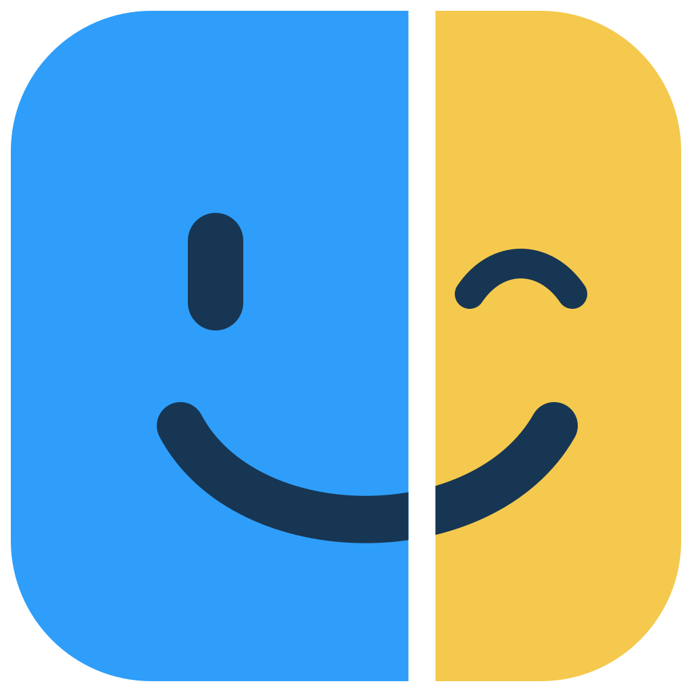
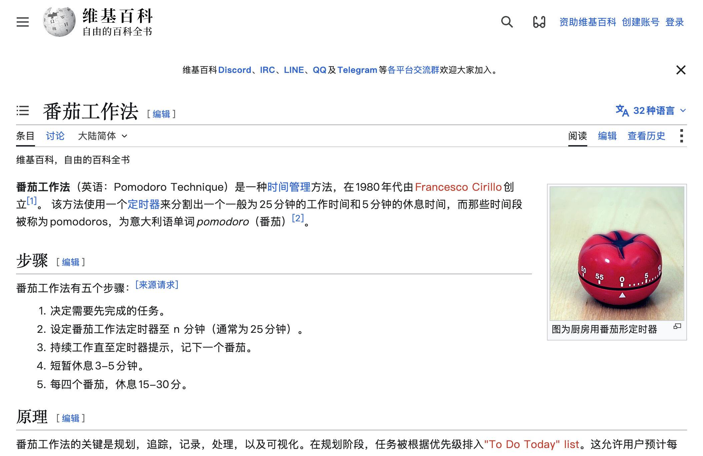
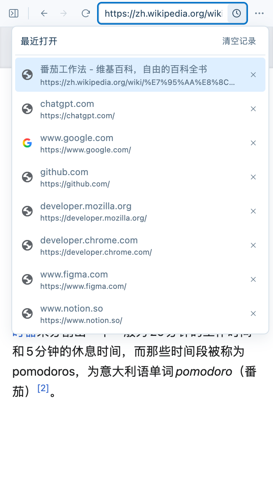
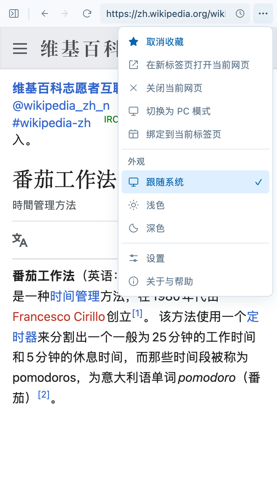
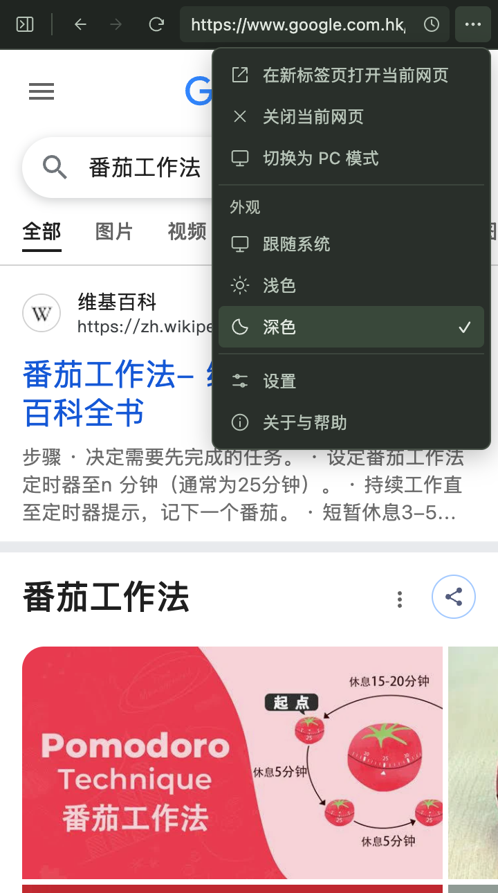

侧窗 · SideBrowser输入任意网址，打开你熟悉的网站。这里以 ChatGPT 为例，边工作边提问。

输入网址，打开你熟悉的网站
主页面看资料，侧边随时提问
共享侧窗，换个标签也继续运行
02 / 并排查资料
以维基百科与 Google 为例：边阅读，边搜索补充信息。
直接输入地址，
也能输入关键词搜索。
原文和参考资料
留在同一个视野里。
03 / 快速打开
当前页面、一个链接、一个新问题，
都可以成为侧窗的起点。
点击左上角入口，或使用欢迎页按钮。
快捷键：Alt + Shift + P（Mac：⌥ ⇧ P）
04 / 最近打开
地址栏里的时钟按钮，
让刚查过的资料更容易找回来。
个最近主动打开的网址
重复打开自动置顶
网站图标与标题帮助你识别条目。
最近记录与当前网页分开管理。



05 / 按你的习惯
显示方式与外观，
在“更多”里随手调整。
按网页切换，切换模式会刷新页面。
切换外观，不重新加载网页。
也可关闭当前网页，回到欢迎页。
SideBrowser
常用的网站，就在你手边。
输入任意网址，打开你熟悉的网站。
两个网页，同一个视野。